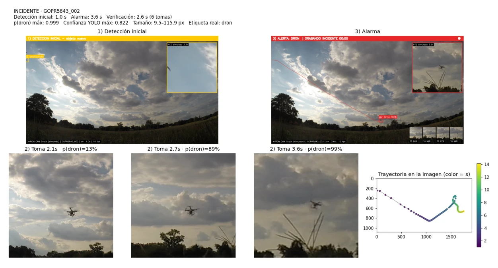

Detecta
Identifica la actividad de radio en 2.4 GHz de un dron cercano y la IA lo distingue de aves, aviones y hojas.
2.4 GHzScout v4 · Detector de drones
XYRON CAM Scout vigila el cielo sobre tu casa o empresa. Detecta drones, los sigue con su cámara y te manda la alerta con evidencia lista para denunciar.
El problema
Un dron con cámara cuesta menos que un celular y puede grabar tu patio, tus horarios y tus accesos desde decenas de metros de altura. Las cámaras de seguridad apuntan hacia abajo; nunca lo ven.
Simulador
Elige un escenario. Cuando la radio capta la señal de un dron, Scout entra en alerta temprana: la radio avisa que hay un dron cerca pero no dónde, así que la cámara acelera su giro de 360° y barre el cielo hasta encontrarlo. Después lo confirma con IA y empieza a grabar. Si pasa un ave, la identifica, la ignora y sigue vigilando.
Escenario
Radar · vista desde arriba
Espectro de radio 2.4 GHz
Barrido de escucha: busca el enlace de control del dron hasta 150 m.
Eventos
Simulación ilustrativa: distancias, tiempos y comportamiento son aproximados y no son especificaciones del equipo. La radio detecta el enlace del dron hasta 150 m y la escena llega a 200 m. La cámara gira 360° continuos e inclina de −10° a +90°. El barrido de radio es pasivo: Scout escucha, no emite ni interfiere.
Cómo funciona
Dos sentidos trabajan juntos: un receptor de radio que escucha el enlace entre el dron y su control, y una cámara con inteligencia artificial que lo confirma visualmente.
Identifica la actividad de radio en 2.4 GHz de un dron cercano y la IA lo distingue de aves, aviones y hojas.
2.4 GHzLa cabeza motorizada gira 360° e inclina la cámara para mantener al dron centrado mientras esté a la vista.
Pan 360°Graba video y capturas con fecha, hora, dirección y elevación de cada sobrevuelo.
12.3 MPTe avisa en el celular al instante y deja la evidencia lista para presentar ante la autoridad.
Alerta + expedienteDiseño
Este es el modelo real de la Scout v4 en 3D. Gíralo, acércate, cambia el color y ábrelo para ver cómo se mueve y cómo está hecha por dentro.
Color: Blanco ártico
Cuerpo de un solo color y aro oscuro, pensada para verse bien en una azotea, no para esconderse.
Render en tiempo real con materiales aproximados. Blanco ártico es el color de producción porque refleja más sol y ayuda a mantener fresco el interior; Arena y Azul cielo son colores de concepto.
Pruebas de detección
Pruebas del software de detección sobre grabaciones de vuelos reales: primero aparece un objeto, la IA lo verifica y, si es un dron, se dispara la alerta y empieza la grabación del incidente. El recuadro de la esquina simula el acercamiento de la cámara.


Las marcas en pantalla y los reportes vienen de una simulación del sistema sobre video grabado; no son capturas de un equipo Scout instalado.
Tecnología
Inteligencia artificial que corre dentro del equipo, carcasa sellada para exteriores y una sola conexión de corriente.
App
Cada sobrevuelo queda como un evento con video, capturas y datos del vuelo. Lo revisas, lo compartes o lo exportas para tu denuncia. Prueba la app aquí mismo: tócala como si fuera tu celular.
Alerta inmediataNotificación con la dirección del dron y una captura.
Historial de eventosTodos los sobrevuelos ordenados por fecha y duración.
Expediente para denunciarVideo, capturas, hora y dirección en un solo archivo.
Prototipo navegable con datos ilustrativos.
Cobertura
Cada Scout vigila 360° a su alrededor. Con un alcance de 150 m y un dron volando a 50 m de altura, cubre un círculo de unos 141 m de radio. Estos son tres ejemplos.
Estimación geométrica con un alcance supuesto de 150 m; el alcance real se medirá en las pruebas piloto y depende del dron, el clima y los obstáculos.
Especificaciones
Especificaciones de diseño del prototipo Scout v4; pueden cambiar en la versión comercial.
Preguntas frecuentes